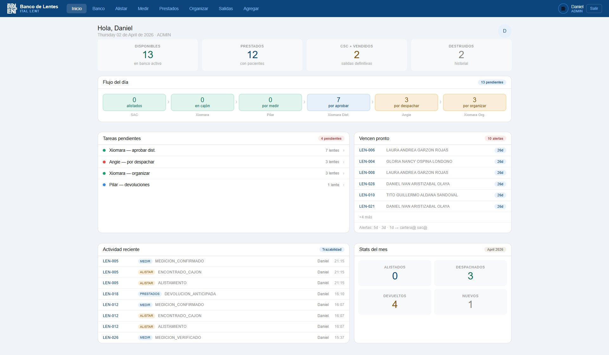
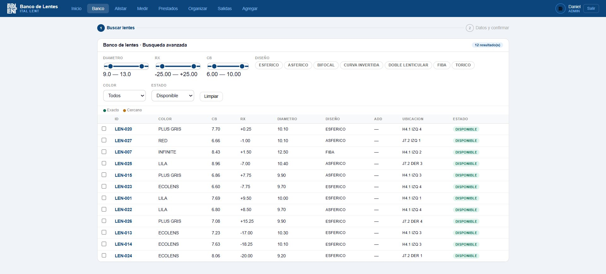
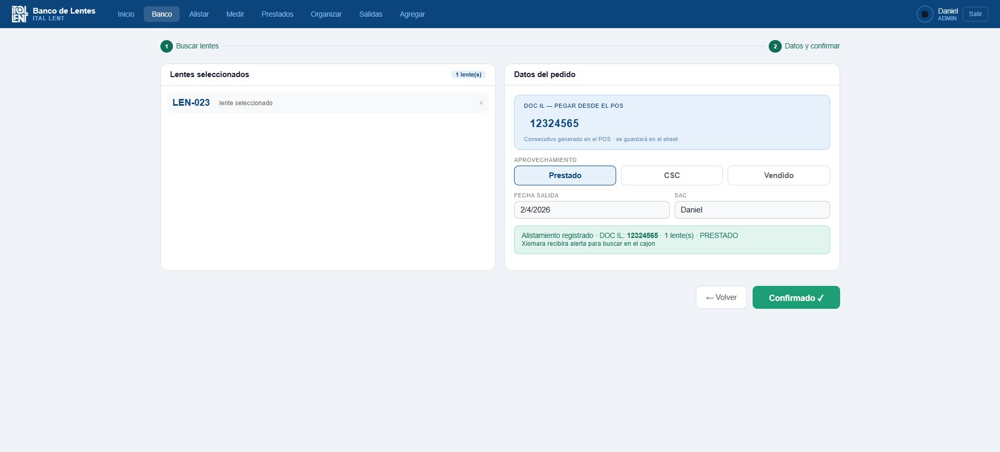
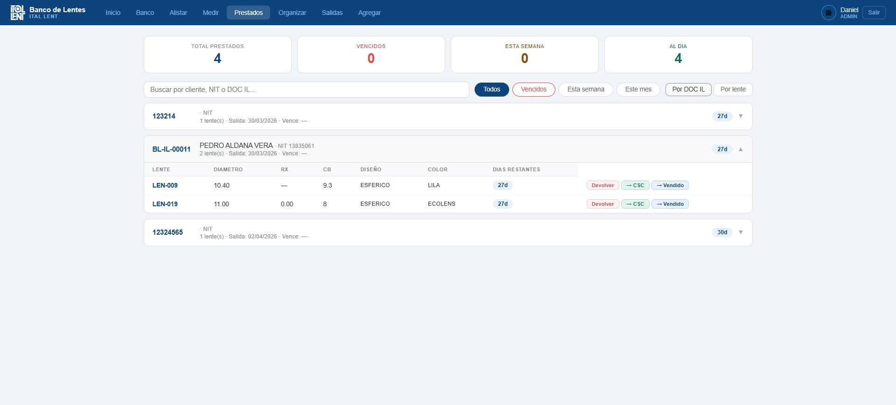
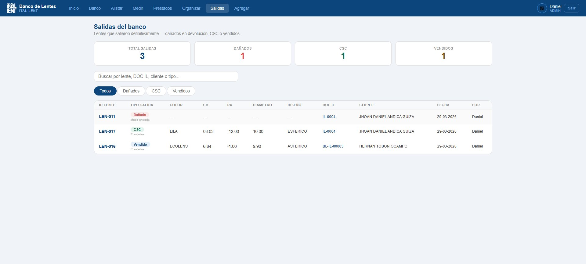

Dashboard
Vista general del flujo del día — tareas, alertas y actividad reciente
Más de 5.000 lentes de producción sin aprovechamiento se convirtieron en un activo operativo completo — con préstamos a optómetras, medición, alistamiento, trazabilidad y alertas automáticas. Todo sin pasar por el POS.
Los lentes que salen de producción sin venta directa se fueron almacenando durante años hasta superar los 5.000 unidades. Sin sistema, sin ubicación física clara, sin historial de quién los tenía ni cuándo debían volver.
El proceso existía solo en la cabeza de las personas. Cuando un optómetra pedía un lente para prueba, el seguimiento se hacía por WhatsApp o en papel. Las devoluciones se perdían. Nadie sabía cuántos estaban prestados ni en qué estado.
Tampoco era posible usar el POS porque el préstamo es un servicio sin cobro — necesitaba un sistema propio con lógica de negocio distinta.





Este sistema nació de una necesidad real. Si tienes inventarios, préstamos, o flujos entre áreas que hoy viven en WhatsApp o Excel, puedo construirte algo similar.